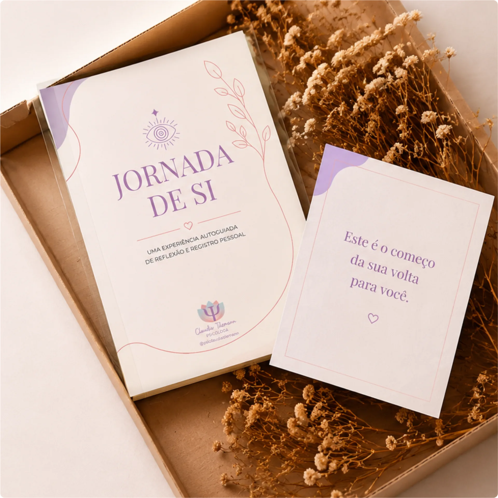
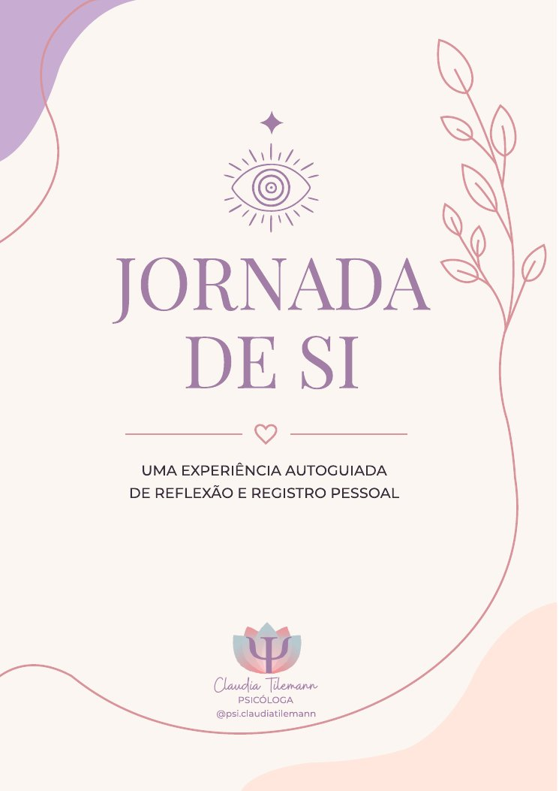
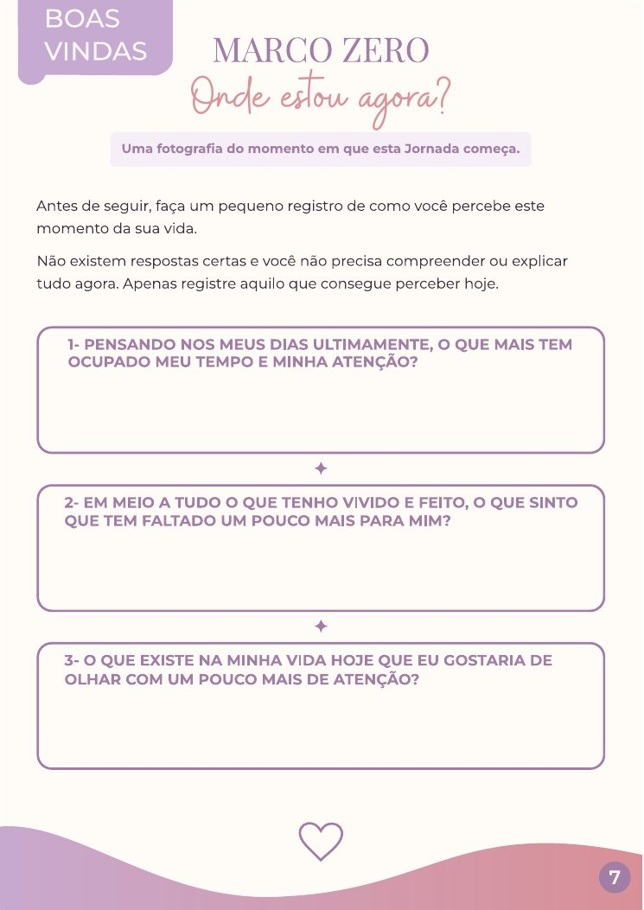
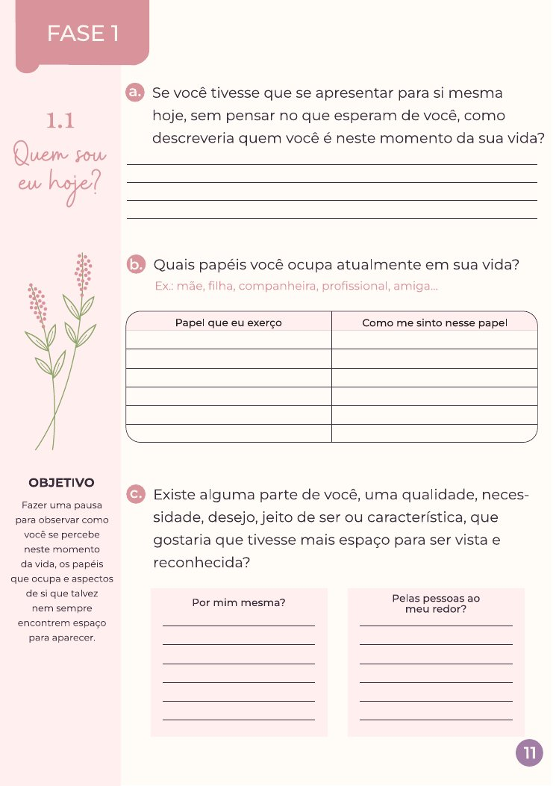

Você lembra da consulta da sua mãe, do material da escola, da conta que vence na sexta e do presente que ainda falta comprar. Resolve o que aparece, apaga um incêndio atrás do outro e ainda pensa no jantar.
Quando alguém pergunta como você está, você sorri e diz que está tudo bem. Porque alguém precisa ser forte, e quase sempre é você.
Até que um dia você se olha no espelho e pensa:
“Eu não sou mais a mesma de antes.”
Talvez você também se reconheça aqui
Se você marcou mais de uma, você não está exagerando. Muitas mulheres passaram tanto tempo cuidando de todos que esqueceram de si. Esse cansaço que mora na alma tem nome e tem história.
O problema não é falta de força.
É excesso de sobrevivência.
Voltar para si não exige mudar de vida. Começa com pequenas pausas, boas perguntas e um tempo só seu. Foi pensando nisso que a Claudia criou a Jornada de Si.
A Jornada
Um percurso de reflexão e escrita em cinco fases. Cada fase leva uma semana e tem perguntas, exercícios e espaço para você escrever. Uma fase prepara a seguinte, então você sempre sabe o que fazer depois.
Você escreve só para você, sem precisar contar a sua história para ninguém.
Quem criou a Jornada
Eu sou a Claudia Tilemann, psicóloga (CRP 14/10201). Por muitos anos, trabalhei com eventos e hotelaria. Sou formada em Economia e construí minha carreira cuidando de pessoas, de detalhes e de tudo o que precisava dar certo. O desejo de estudar Psicologia ficou guardado esse tempo todo.
Hoje atendo mulheres e ouço, toda semana, histórias parecidas com a sua. Mulheres que cuidaram de todos e, em algum momento, deixaram de se reconhecer. A Jornada de Si nasceu desse encontro entre a minha história, a minha formação e o que aprendi na clínica.
“Acredito que o autoconhecimento não acontece para encontrarmos uma versão perfeita de quem somos, mas para criarmos uma relação mais gentil, consciente e verdadeira conosco.”
O que inclui
Para acompanhar: uma playlist para cada fase e uma bibliografia comentada, para quem quiser ir além.

Jornada de Si completa
R$67
à vista ou 12x de R$6,93
São cerca de R$13 por semana de um tempo só seu, e você tem 1 ano para fazer no seu ritmo.
Quero começar a minha Jornada7 dias para conhecer. Se não for o seu momento, você pede o reembolso.
Pagamento seguro pela Hotmart.
A Jornada é autoguiada e não substitui acompanhamento psicológico. Claudia Tilemann, psicóloga, CRP 14/10201.
Por dentro da Jornada
Antes da primeira fase, a Jornada pede que você pare e responda: onde estou agora? No fim das cinco semanas, você volta a essa página e enxerga o caminho que fez.



Você tem 7 dias para conhecer a Jornada. Comece por Raízes, faça a primeira atividade e veja se faz sentido para você.
Se perceber que não é o seu momento, peça o reembolso dentro do prazo, direto pela Hotmart. Sem perguntas e sem constrangimento.
A Jornada pede cerca de 40 a 60 minutos por semana, e você pode dividir esse tempo em pequenas atividades ao longo dos dias. Se uma semana for corrida, você pausa e retoma depois. Não é preciso mudar a sua rotina para começar.
A Jornada não é uma prova. Você tem 1 ano de acesso para fazer no seu ritmo, e os PDFs que baixar continuam sendo seus. Se parar no meio, é só voltar de onde parou.
Não precisa. A Jornada começa por uma página simples, “Onde estou agora?”, e depois conduz você uma semana de cada vez. O Passaporte mostra o que fazer em cada fase.
Não. Ninguém vai ler o que você escrever. Pode ser em tópicos, frases soltas ou poucas palavras. O que importa é o que faz sentido para você.
Reservar um tempo para você não tira nada de quem você ama. Dá para cuidar de você aos poucos, sem deixar de olhar os seus. Cuidar de si também é uma forma de continuar cuidando de quem está ao seu redor.
A Jornada é feita no espaço reservado do seu caderno. Você não precisa anunciar nada nem mudar tudo de uma vez. Cada semana é um passo pequeno, no seu tempo.
Você faz no seu ritmo, mas o caminho já está traçado. Cada semana tem um passo definido, pensado por uma psicóloga, para você não precisar decidir sozinha o que fazer.
A sua sobrecarga é real, e a Jornada não promete mudar ninguém além de você. O que ela oferece é um tempo só seu e um espaço para entender por que você segura tanta coisa (na fase Libertação) e para encontrar a sua voz na hora de pedir e de dizer não (Fortalecimento e Acolhimento).
Os vídeos acolhem e ajudam a dar nome ao que você sente. A Jornada é um processo em cinco fases, uma por semana, com exercícios em sequência e espaço para você escrever a sua própria história.
Não. A Jornada é um material autoguiado de reflexão. Ela pode acompanhar uma terapia, mas não toma o lugar dela. Se você estiver passando por um momento de sofrimento intenso, procure um psicólogo ou um serviço de saúde.
Algumas perguntas podem trazer lembranças ou sentimentos fortes. O material traz avisos de cuidado e você pode pular um exercício, fazer uma pausa ou voltar a ele outro dia. Se o desconforto ficar grande, vale buscar apoio profissional.
O material tem 41 páginas, mas funciona como um percurso: cinco fases encadeadas, Passaporte, Mapa de Si, áudios de reflexão guiada e uma playlist para cada fase.
Não. É um material de reflexão psicológica, que respeita a fé e as crenças de cada mulher.
Logo depois da compra, a Hotmart envia um e-mail com o acesso. Você baixa os PDFs e os áudios e pode usar no celular, no computador ou imprimir.
Dentro de 7 dias da compra, pela própria Hotmart, sem precisar explicar o motivo.
Não existe hora certa para voltar para si. Existe a primeira semana. Cinco fases, uma por vez, cerca de 40 a 60 minutos por semana, em um material criado por uma psicóloga para você fazer no seu ritmo.
R$67 ou 12x de R$6,93
Quero começar a minha JornadaAcesso por 1 ano · 7 dias para pedir reembolso
O problema não é falta de força. É excesso de sobrevivência.
Com carinho e respeito pelo seu processo,
Claudia Tilemann
Psicóloga · CRP 14/10201